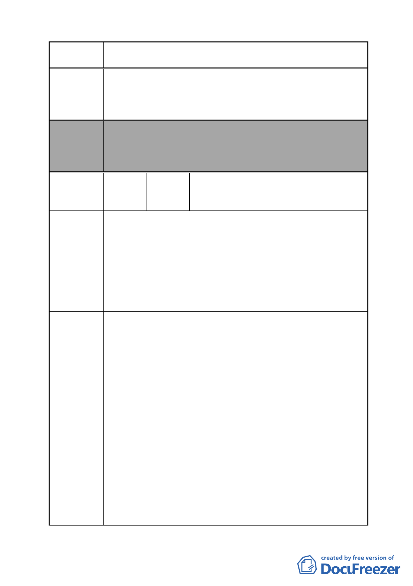

案 名 變更臺北市南港區鐵路地下化沿線土地主要計畫案
建議辦法
委員會
決議
編號
陳情理由
建議昆陽街不拓寬。
要拓寬，應由昆陽街東側拓寬，影響居民戶數最少，而且昆
陽街道路才能完全切齊到忠孝東路，不會變成忽胖忽瘦的道
路。
本案除文字誤繕應再作修正外，其餘依市府本次會議所送修
正計畫書內容通過。
（市府本次會議所送修正計畫書，本案將不拓寬昆陽街，逕
依現行規定辦理）
宋則範（附 23 人連署）、盧定昶、李珮瑜、
16 陳情人 基督教傳道會復生教會（附 38 人連署）、
江丕忠等 9 人連署
陳情地點：南港區向陽路 104 號 2、3 樓。
1.本財團法人乃正式登記永久設立（法人登記證書影本如附
件），先於台北市相關「土地使用分區法令」。但如今根據台
北市政府相關「土地使用分區法令」，既無法搬遷，也無法
於原址新建、增建、改建及修建。
2.本教會面臨拆遷比居民更加困難，沒有足夠的經費購置或租
用新堂，終將被迫解散，無法繼續服務鄉里。
3.台北市許多的教會也是面臨同樣的問題，無法解決。
I.台北市政府都市發展局部分：
A.「台北市宗教事務之財團法人」不可等同於「宗祠」及「宗
教建築」。根據《民法》，此乃「法人」的一種，不是建築物。
（《民法》第一編第二章第二節）
B.《民法》第 29 條 法人以其主事務所之所在地為住所。「台
北市宗教事務之財團法人」的「主事務所」可以是「辦公室」，
也有很多其他的選擇；「宗祠」及「宗教建築」只是其中之
一。故不可將「台北市宗教事務之財團法人」等同於「宗祠」
及「宗教建築」。
C.都市發展局按照「台北市宗教事務之財團法人」土地及建築
物之使用，請依其性質、用途、規模，來訂定相關「土地使
用分區法令」。當「台北市宗教事務之財團法人」使用土地
及建築物時，不可認為其必定對周鄰環境造成極大的不良影
響，因而訂定嚴苛的法令規範之。
D.都市發展局按照「台北市宗教事務之財團法人」土地及建築
物之使用，請依其性質、用途、規模來審核；不可一律當成
「宗祠」及「宗教建築」來審核，也不宜歧視任何宗教團體。
- 28 -